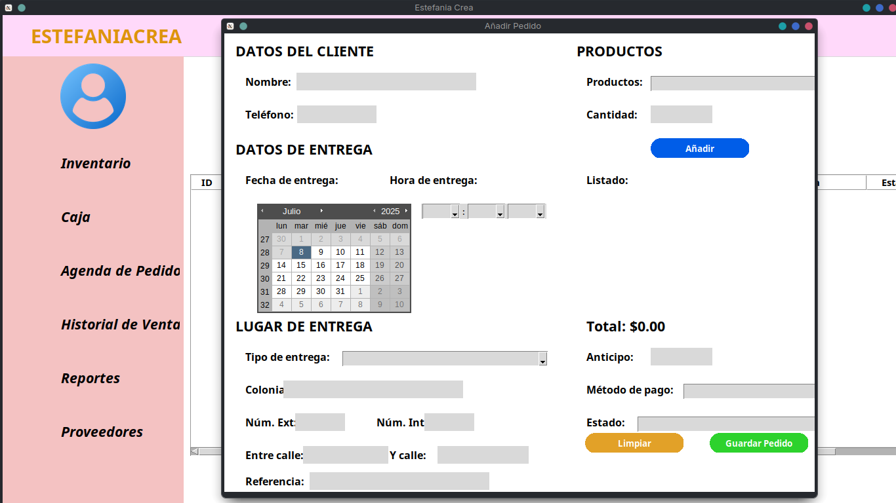

-

-

- 

Flosrist Management surgio a partir de varios retos que enfrentaba la floristeria como:
Esto dificultaba la organización, la atención al cliente y la toma de decisiones basada en datos.
¡Descarga la presentación y mira el proceso completo!
Descargar PDF